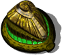
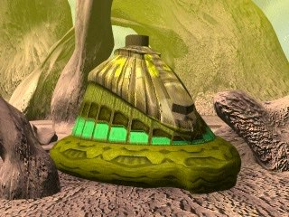

Школа войны


Панель информации в игре
- Энергии треб.:
- 1000
- Энергия (HP):
- 1250
- Макс. число рабочих:
- 60?
- Время постройки:
- 18 с?
Затраты: Экстракт 800 Железо 450 Уголь 0 Титан 0
Описание
Это место, где тренируются войска. Здесь можно готовить все типы пехоты. Чем больше число Школ Войны, тем быстрее и больше можно натренировать пехоты.
Связанное
- Требует
- Матка
- Открывает
- Зверинец, Фабрика, Ангар, Лаборатория, Медуза, Инсект, 2 Инсект, 3 Инсекта, 4 Инсекта, 5 Инсектов, Инсектус, Инсектус, Пояс-Антиграв, Персональный ГСП
- Производит
- Инсект (slot 0), Инсектус (slot 1)
Параметры конфигурации, которых нет в игре (9)
SIGHT- 4
BUILDER- 60
TRACE- 2
HEIGHT- 1
COMPONENT_QUANT- 1
SPRITE_QUANTITY- 1
TYPE- R_aFABRYKA
AIBLD- AIBLD_SOLDIER_FACTORY
AREA- 1, 1, 0, 0, 0, 0, 0, 0, 0, 0, 1, 1, 0, 0, 0, 0, 0, 0, 0, 0, 1, 1, 0, 0, 0, 0, 0, 0, 0, 0, 0, 0, 0, 0, 0, 0, 0, 0, 0, 0, 0, 0, 0, 0, 0, 0, 0, 0, 0, 0, 0, 0, 0, 0, 0, 0, 0, 0, 0, 0, 0, 0, 0, 0, 0, 0, 0, 0, 0, 0, 0, 0, 0, 0, 0, 0, 0, 0, 0, 0, 0, 0, 0, 0, 0, 0, 0, 0, 0, 0, 0, 0, 0, 0, 0, 0, 0, 0, 0, 0